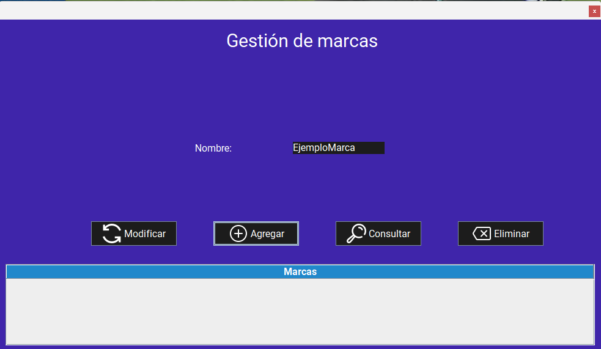

Pantalla principal:
Al iniciar la aplicación, se muestra la pantalla principal de la gestión de marcas. Esta pantalla permite agregar, modificar y eliminar marcas, así como consultar la lista de las marcas registradas en el sistema.
Funcionalidades:
1. Agregar una marca
Para agregar una marca, siga estos pasos:
- Inicie la aplicación.
- Ingrese el nombre de la marca en el campo de texto (marca).
- Haga clic en el botón "Agregar". 
Advertencias
2. Consultar una marca
Para consultar una marca, siga estos pasos:
- Inicie la aplicación.
- Si desea consultar la información de todos las marcas en los datos registrados, simplemente haga clic en el botón "Consultar".
- Si desea consultar la información de una marca en especifico, proceda a ingresar el nombre de la marca en el campo de texto (marca).
- Haga clic en el botón "Consultar".
Advertencias
3. Modificar una marca
Para modificar una marca, siga estos pasos:
- Inicie la aplicación.
- Realice una consulta de la marca que desea modificar para observar la información de la marca, siguiendo los pasos mencionados anteriormente.
- Una vez que se muestre la información de la marca, haga clic en el botón "Modificar".
- Se abrirá una pantalla de edición donde podrá modificar el nombre de la marca.
- Haga clic en el botón "Modificar".
Advertencias
4. Eliminar una marca
Para eliminar una marca, siga estos pasos:
- Inicie la aplicación.
- Introduzca el nombre de la marca a eliminar en el campo de texto (marca)
- Haga clic en el botón "Eliminar".
Advertencias